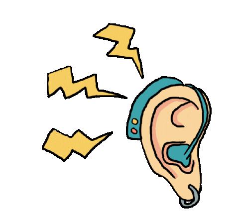

IDENTIFIADOR DE SONIDOS
INDICACIONES: Dale click a PRENDER MICROFONO para que hagas estos sonidos.(sonido de un perro ladrando, un gato maullando, una gallina, y el sonido del fondo)
PRENDE EL MICROFONO

Hecho Por Isabella Díaz